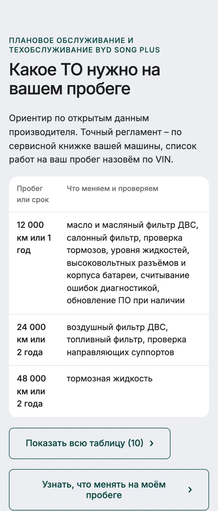
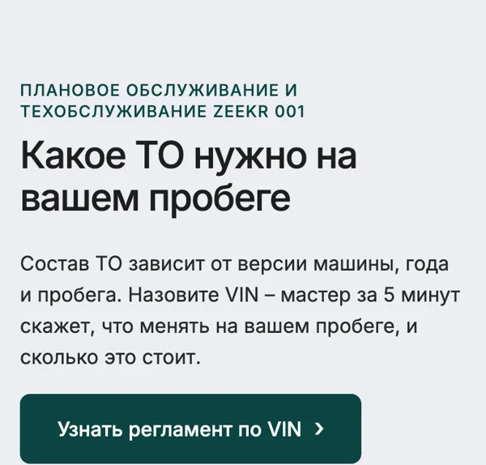
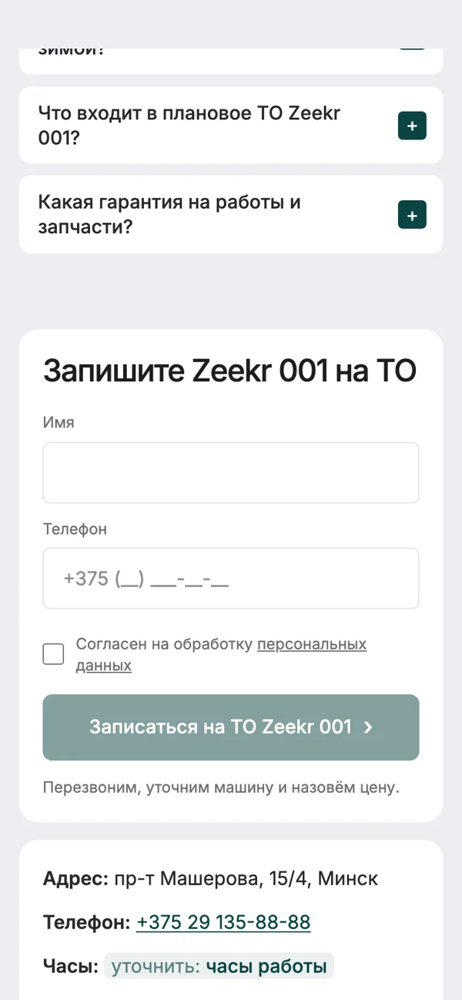
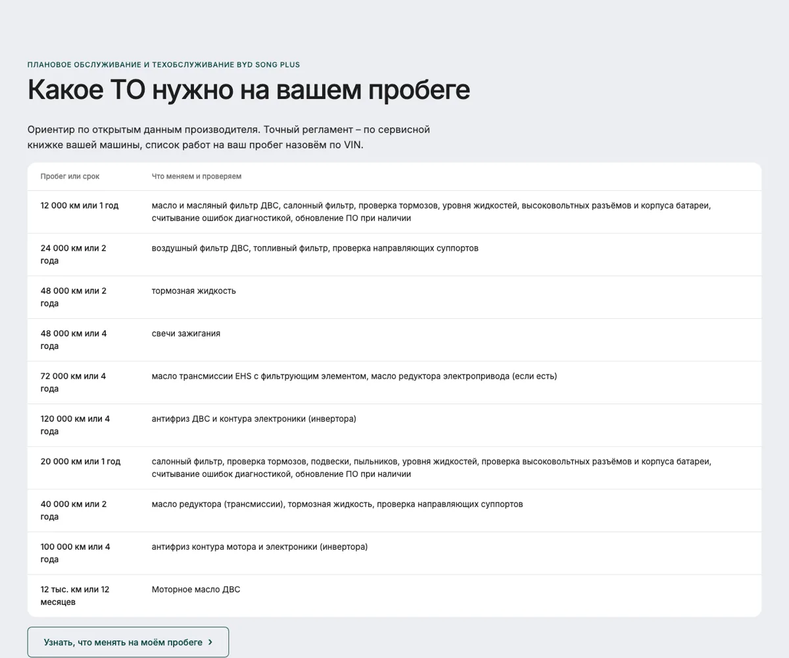
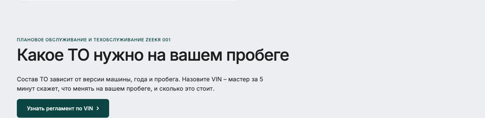

Регламент ТО: А – клиент видит таблицу, Б – таблицы нет, только кнопка «Узнать по VIN»
Послушать итог голосом
Разница одна: показываем ли мы клиенту интервалы ТО его модели. В А он сам видит, что и когда менять. В Б он ничего не видит и должен оставить заявку, чтобы узнать. Мой совет – А.
Так это выглядит на телефоне


Что будет после нажатия кнопки – одинаково
В обоих вариантах кнопка ведёт к форме записи внизу страницы: имя, телефон, галочка. Мастер перезванивает.

Чем отличаются
| А – таблица | Б – кнопка по VIN | |
|---|---|---|
| Что видит клиент | Интервалы ТО своей модели: 12 000 км – масло, фильтры; 48 000 км – тормозная жидкость… | Одну фразу и кнопку |
| Поиск (Яндекс, Google, нейросети) | Есть что показать по запросу «регламент ТО Song Plus» – текст таблицы читается | Текста нет – страница слабее в поиске |
| Риск ошибки | Цифры из открытых данных, могут не совпасть с книжкой клиента – поэтому честная подпись | Ошибиться нечем |
| Заявки | Кто хочет точнее – жмёт кнопку под таблицей | Узнать можно только через заявку – заявок может быть больше, но часть людей уйдёт без ответа |
| У 15 моделей таблицы нет | Блок на этих страницах скрываем | Не важно – везде одна кнопка |
| Работа на все 34 модели | 1 ч · себестоимость 1 000 ₽ · клиенту от 3 000 ₽ | 0,5 ч · себестоимость 500 ₽ · клиенту от 1 500 ₽ |
Почему совет – А
- Человек пришёл узнать, когда ему на ТО. В А он получает ответ сразу и видит, что сервис знает его машину.
- Таблица – это текст под запрос «регламент ТО модели». В Б этого текста нет.
- Риск ошибки закрыт подписью и кнопкой «точно – по VIN».
На компьютере


Нужно от тебя
Одна буква: А или Б. Раскатаю на все 34 модели.
Что раскрыть
- Живые страницы: А – https://tema-mail.github.io/evolution-service-minsk-proto/design/brands/byd/song-plus/#reglament , Б – https://tema-mail.github.io/evolution-service-minsk-proto/design/brands/zeekr/001/#reglament
- Отчёт по всем 9 решениям: https://tema-mail.github.io/razbory/evolution-minsk-resheniya-sdelano-34772193/